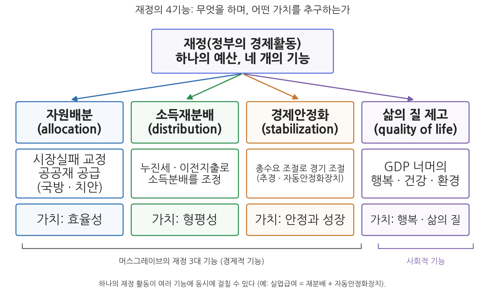

2주차 1차시. 재정의 기능: 배분, 재분배, 안정, 삶의 질
최종 수정: 2026-08-13 · 이 교재는 학기 중에도 계속 업데이트됩니다
국가는 균형있는 국민경제의 성장 및 안정과 적정한 소득의 분배를 유지하고, 시장의 지배와 경제력의 남용을 방지하며, 경제주체간의 조화를 통한 경제의 민주화를 위하여 경제에 관한 규제와 조정을 할 수 있다. (대한민국헌법 제119조 제2항)
이 장에서 배우는 것
숫자 하나에서 시작하자. 2025년 12월 2일 국회는 2026년도 예산을 총지출 727조 9,000억 원으로 확정했다. 그런데 이 돈은 대체 무엇을 하는 돈인가. 예산서를 넘겨 보면 성격이 사뭇 다른 지출들이 한 문서 안에 나란히 앉아 있다. 국방과 치안처럼 시장에 맡겨서는 아무도 만들지 않는 것을 정부가 직접 공급하는 지출이 있고, 기초생활보장 급여처럼 시장이 나눠 준 소득을 다시 나누는 지출이 있다. 2026년 4월에 국회를 통과한 26조 2,000억 원 규모의 추가경정예산(추경)처럼 고유가로 흔들리는 경기를 떠받치기 위한 지출도 있으며, 문화시설과 생활체육, 환경처럼 국민의 일상적 만족을 겨냥한 지출도 있다. 규모의 문제와는 별개로, 재정이 하는 일 자체가 여러 갈래라는 뜻이다.
1주차에서 우리는 재정이 정부의 경제활동이며, 예산의 본질이 숫자가 아니라 정책사업이라는 것, 그리고 희소한 자원을 놓고 벌어지는 배분이 경제원리와 정치원리의 긴장 속에서 결정된다는 것을 배웠다. 이번 차시는 그 배분 활동이 도대체 무엇을 위한 것인가, 곧 재정의 목표이자 역할인 기능(function)을 다룬다. 이론적 축은 머스그레이브(R. A. Musgrave)가 정식화한 재정의 3대 기능, 곧 자원배분, 소득재분배, 경제안정화다. 여기에 최근 갈수록 강조되는 삶의 질 제고라는 사회적 기능을 더하고, 마지막으로 이 기능들이 중앙정부와 지방정부 사이에 어떻게 나뉘는지를 살핀다. 구체적으로 다음을 배운다.
- 머스그레이브의 재정 3기능론의 구조와 각 기능이 추구하는 가치(효율성, 형평성, 안정)
- 자원배분 기능의 논리: 시장실패와 공공재, 파레토 최적
- 소득재분배 기능의 논리: 수평적·수직적 형평성과 적정 분배 기준의 가치판단 문제
- 경제안정화 기능의 논리: 총수요 조절, 재량적 재정정책과 자동안정화장치
- 삶의 질 제고 기능이 강조되는 배경: 이스털린의 역설과 GDP의 한계
- 네 기능이 중앙정부와 지방정부 사이에 배분되는 원리
이 장은 하나의 질문을 따라 전개된다. "재정은 무엇을 하는가, 그리고 각 기능은 어떤 가치를 추구하는가?"
1.1 머스그레이브의 3기능론을 지도로 삼아 자원배분 기능과 효율성을 본다 → 1.2 소득재분배 기능과 형평성, 그리고 분배 기준의 가치판단 문제를 본다 → 1.3 경제안정화 기능의 논리와 한국의 최근 추경 사례를 읽는다 → 1.4 3대 기능을 넘어서는 삶의 질 제고 기능을 본다 → 1.5 네 기능이 중앙정부와 지방정부 사이에 어떻게 나뉘는지 정리하고, 다음 차시(재정운영의 규범)를 예고한다.
1.1 자원배분 기능과 효율성
머스그레이브의 재정 3기능론
재정의 기능은 재정이 추구하는 목표이면서 역할이고, 그만큼 정부의 기능과 역할이기도 하다. 이 기능을 체계적으로 정리한 고전이 머스그레이브의 『재정이론(The Theory of Public Finance)』(Musgrave, 1959)이다. 머스그레이브는 정부의 재정 활동을 세 개의 부문(branch)으로 나누어 설명했다. 자원배분(allocation) 부문은 시장이 제대로 공급하지 못하는 재화를 공급하고, 소득분배(distribution) 부문은 시장이 나눠 준 소득을 사회가 바람직하다고 여기는 방향으로 조정하며, 경제안정화(stabilization) 부문은 고용과 물가 같은 거시경제의 안정을 돌본다. 하나의 예산이지만 그 안에서 세 가지 일이 동시에 수행된다는 것이 3기능론의 핵심 통찰이다. 여기에 더해 최근에는 경제적 기능만으로는 재정의 궁극적 목적을 다 담지 못한다는 인식에서 삶의 질 제고라는 사회적 기능이 점점 강조되고 있다. 그림 2-1이 이 장 전체의 지도다.

그림 2-1을 읽는 법은 이렇다. 맨 위의 상자가 재정, 곧 정부의 경제활동이고, 거기서 네 개의 기능이 갈라져 내려온다. 각 기능 아래에는 그 기능이 하는 일과 그 기능이 추구하는 가치(규범)가 짝을 이루어 붙어 있다. 왼쪽 세 기능이 머스그레이브의 3대 기능(경제적 기능)이고, 오른쪽 끝의 삶의 질 제고는 그 위에 더해진 사회적 기능이다. 이 그림에서 알 수 있는 것은 두 가지다. 첫째, 재정의 기능마다 판단 기준이 되는 가치가 다르다. 배분은 효율성으로, 재분배는 형평성으로, 안정화는 안정과 성장으로 평가된다. 둘째, 하나의 재정 활동이 여러 기능에 동시에 걸칠 수 있다. 예컨대 실업급여 지출은 재분배 기능이면서 뒤에서 볼 자동안정화장치이기도 하다.
자원배분이란 무엇인가
자원배분(resource allocation)이란 어떠한 재화와 용역이 사회적으로 바람직한 생산과 소비 수준을 유지하고 있는가를 보여 주는 개념이다. 어떤 재화가 사회적 최적 수준보다 과잉 생산되거나 과소 생산되고 있다면 자원 배분이 잘 되어 있다고 볼 수 없다. 이는 재화와 용역만이 아니라 노동과 자본 같은 생산요소의 배분에도, 그리고 민간재와 공공재 사이의 배분 문제에도 동일하게 적용된다.
시장경제의 기본 믿음은 애덤 스미스의 보이지 않는 손, 곧 가격기구가 효율적 자원배분을 달성한다는 것이다. 실제로 경쟁시장은 많은 재화에서 이 일을 훌륭히 해낸다. 문제는 시장이 이 일을 해내지 못하는 영역이 체계적으로 존재한다는 점이다. 이를 시장실패(market failure)라 한다. 국방, 치안, 외교 같은 재화는 시장에 맡겨 두면 사회가 필요로 하는 수준보다 턱없이 적게 공급되거나 아예 공급되지 않는다. 이때 정부가 재정과 규제 등으로 개입하여 해당 재화를 직접 공급하거나 공급을 유도한다. 재정의 자원배분 기능이란 바로 이것, 곧 시장실패를 교정하여 사회 전체의 자원이 바람직한 수준으로 배분되도록 만드는 일이다.
공공재(public goods)는 두 가지 성질을 함께 지닌 재화다. 비경합성(non-rivalry)은 한 사람의 소비가 다른 사람의 소비 가능성을 줄이지 않는 성질이고, 비배제성(non-excludability)은 대가를 지불하지 않은 사람을 소비에서 배제할 수 없는 성질이다(Samuelson, 1954). 국방이 전형이다. 내가 국방의 보호를 받는다고 이웃의 보호가 줄지 않으며, 세금을 내지 않은 사람만 골라 보호에서 제외할 방법도 없다. 두 성질을 모두 갖춘 재화를 순수공공재, 일부만 갖춘 재화를 준공공재라 부른다.
열쇠는 비배제성에 있다. 대가를 내지 않아도 소비에서 배제되지 않는다면, 합리적 개인은 남이 비용을 부담해 주기를 기다리는 것이 이득이다. 이를 무임승차자 문제(free-rider problem)라 한다. 모두가 이렇게 계산하면 지불 의사는 실제 선호보다 훨씬 작게 드러나고, 수요가 작게 드러나니 시장의 공급도 사회적 최적 수준에 못 미치게 된다. 민간 기업이 국방 서비스를 팔겠다고 나서지 않는 이유가 여기에 있다. 요금을 걷을 방법이 없기 때문이다. 그래서 공공재의 공급은 강제 징수 권한, 곧 조세를 가진 정부의 몫이 되고, 그 결정은 시장의 가격기구가 아니라 예산과정이라는 정치과정을 통해 이루어진다. 1주차 2차시에서 본 "공공부문의 배분은 정치원리로 결정된다"는 명제가 여기서 다시 확인되는 셈이다.
정부가 돈을 쓰는 재화라고 해서 모두 공공재인 것은 아니다. 교육, 주택, 의료는 경합성과 배제성이 있어 시장에서 거래될 수 있고 실제로 거래된다. 그런데도 정부가 재정을 투입하는 것은, 사회적으로 바람직한 수준보다 적게 소비될 우려가 있어 소비를 장려할 가치가 있다고 사회가 판단하기 때문이다. 머스그레이브는 이런 재화를 가치재(merit goods)라 불렀다. 공공재는 시장이 공급하지 못해서 정부가 나서는 경우고, 가치재는 시장이 공급할 수 있지만 그 수준이 부족하다고 보아 정부가 개입하는 경우다. 정부 개입의 근거가 서로 다르다는 점을 구분해 두자.
배분의 판단 기준: 효율성과 파레토 최적
재정은 자원배분 면에서 효율성(efficiency)이라는 가치를 추구한다. 이때의 효율성은 개별 조직의 비용 절감 같은 좁은 의미가 아니라, 사회적 후생 측면에서 자원 배분이 얼마나 잘 되어 있는가를 뜻하는 배분적 효율성(allocative efficiency)이다. 경제학이 제시하는 가장 효율적인 배분 상태의 기준이 파레토 최적(Pareto optimality)이다. 파레토 최적이란 다른 사람의 후생을 감소시키지 않고서는 어느 한 사람의 후생도 증가시킬 수 없도록 자원이 배분되어 있는 상태, 곧 사회 후생의 극대화가 이루어진 상태를 말한다. 아직 누군가의 후생을 공짜로 늘릴 여지가 남아 있다면 그 배분은 최적이 아니라는 발상이다.
파레토 최적은 강력한 기준이지만 침묵하는 것이 하나 있다. 배분 상태가 효율적인가만 물을 뿐, 그 배분이 공정한가는 묻지 않는다는 점이다. 한 사람이 거의 모든 자원을 갖고 나머지가 빈털터리인 상태도, 그 상태에서 누군가의 후생을 늘리려면 반드시 그 한 사람의 몫을 건드려야 한다면, 정의상 파레토 최적일 수 있다. 효율의 언어로는 대답할 수 없는 이 질문이 재정의 두 번째 기능으로 우리를 데려간다.
1.2 소득재분배 기능과 형평성
효율적 배분이 공정한 분배를 보장하지 않는다
효율적인 자원 배분이 이루어졌다고 하더라도 공정한 소득 분배가 이루어진다는 보장은 없다. 시장이 만들어 내는 소득분포는 두 가지의 곱으로 결정된다. 개인이 보유한 자원(노동력, 자본, 토지 같은 생산요소)과 그 자원에 대한 시장의 평가(한계생산력)다. 그런데 보유 자원은 상속과 타고난 능력, 성장 환경에 좌우되고, 시장의 평가는 수요와 공급의 사정에 따라 출렁인다. 어느 쪽도 도덕적 응분과 일치한다는 보장이 없다. 그래서 정부는 재정의 세입과 세출 양면을 통해 시장이 만든 분배 상태를 "더 좋은" 방향으로 고치기 위한 조치를 취한다. 세입 측면에서는 소득이 높을수록 더 높은 세율을 적용하는 누진세율과 저소득층을 위한 조세감면이, 세출 측면에서는 기초생활보장 급여 같은 이전지출, 의무교육 지원, 주택 지원 등이 대표적 수단이다.
형평성(equity)은 "각자의 몫은 각자에게로", "같은 것은 같게, 다른 것은 다르게"라는 요구로 요약되는 분배의 가치다. 두 차원으로 나뉜다. 수평적 형평성(horizontal equity)은 같은 처지에 있는 사람은 같게 대우해야 한다는 것으로, 소득 수준이 같으면 동일한 세금을 내야 한다는 요구다. 수직적 형평성(vertical equity)은 다른 처지에 있는 사람은 다르게 대우해야 한다는 것으로, 소득 수준이 다르면 상이한 세금, 곧 더 능력 있는 사람이 더 많은 세금을 내야 한다는 요구다. 누진세는 수직적 형평성의 대표적 제도화다.
어렵고도 정치적인 질문: 무엇이 바람직한 분배인가
여기서 재분배 기능 특유의 난점이 등장한다. 효율성과 달리 형평성은 바람직한 상태가 무엇인지를 파악하기가 쉽지 않다는 점이다. 효율성에는 파레토 최적이라는 비교적 합의된 기준이 있지만, "더 좋은 분배"의 기준을 놓고는 서로 다른 대답들이 경쟁한다. 각자가 생산에 기여한 만큼 가져가는 것이 공정하다는 공적주의, 사회 전체의 효용 합계를 극대화하는 분배가 옳다는 공리주의, 모두가 균등하게 나누는 것이 옳다는 평등주의, 그리고 가장 불리한 처지에 있는 사람의 몫을 극대화하는 분배가 정의롭다는 롤즈(J. Rawls)의 기준이 대표적이다. 어느 기준을 택할 것인가는 논리로 판가름 나는 사실판단의 문제가 아니라 가치판단의 문제이며, 따라서 정치과정을 통해 결정된다. 1주차 1차시에서 본 "예산은 가치판단과 사실판단의 결합물"이라는 명제가 재분배 기능에서 가장 선명하게 드러나는 셈이다.
형평성에는 또 하나의 특징이 있다. 형평성의 추구는 필연적으로 비용 부담자와 편익 향유자를 나눈다는 점이다. 누진세를 강화하면 고소득층이 부담자가 되고 저소득층이 수혜자가 되며, 그 반대의 조정도 마찬가지로 승자와 패자를 만든다. 그래서 재분배는 재정의 기능 가운데 가장 정치적인 기능이고, 동시에 형평성이 높아질수록 다수 국민이 체감하는 정치적 정당성도 높아지는 경향이 있다. 한국의 헌법은 이 재분배 기능을 국가의 의무로 명문화하고 있다.
"① 모든 국민은 인간다운 생활을 할 권리를 가진다.
② 국가는 사회보장·사회복지의 증진에 노력할 의무를 진다.
...
⑤ 신체장애자 및 질병·노령 기타의 사유로 생활능력이 없는 국민은 법률이 정하는 바에 의하여 국가의 보호를 받는다."
무슨 뜻인가. 제1항은 인간다운 생활을 국민의 권리로 선언하고, 제2항과 제5항은 그 권리를 실현할 의무를 국가에 지운다. 이 조문이 재정에 대해 갖는 의미는 분명하다. 소득재분배는 정부가 해도 되고 안 해도 되는 선택 사항이 아니라 헌법이 명령하는 국가의 책무이며, 기초생활보장제도를 비롯한 복지 지출의 헌법적 근거가 바로 여기에 있다. 다만 헌법은 "어느 수준까지" 재분배할 것인가는 말해 주지 않는다. 그 수준의 결정은 앞서 본 대로 분배 기준에 관한 가치판단의 문제로, 매년 예산과정에서 정치적으로 다투어진다.
한국의 실제: 재분배 기능은 얼마나 작동하는가
재정의 재분배 기능이 실제로 작동하는지는 수치로 확인할 수 있다. 소득 불평등도를 나타내는 대표 지표인 지니계수를 정부 개입 전의 소득(시장소득)과 개입 후의 소득(처분가능소득)으로 각각 계산해 비교하는 방법이다.
국가데이터처(옛 통계청)가 한국은행, 금융감독원과 공동으로 실시해 2025년 12월 발표한 「2025년 가계금융복지조사」에 따르면, 2024년 한국의 시장소득 기준 지니계수는 0.399, 세금과 공적이전을 반영한 처분가능소득 기준 지니계수는 0.325였다. 지니계수는 0에 가까울수록 평등, 1에 가까울수록 불평등을 뜻하므로, 정부의 세금 징수와 이전지출이 불평등도를 0.074만큼, 비율로는 약 19% 낮춘 것이다. 다만 처분가능소득 지니계수는 전년(0.323)보다 0.002 상승했고, 소득 상위 20%와 하위 20%의 격차를 나타내는 소득 5분위배율도 5.78배로 전년보다 소폭 올라, 분배 지표가 다시 나빠지는 조짐도 함께 관찰되었다. (출처: 국가데이터처·한국은행·금융감독원, 「2025년 가계금융복지조사」, 2025년 12월)
이 수치가 보여 주는 것은 두 가지다. 첫째, 한국의 재정은 실제로 소득 불평등을 완화하고 있다. 시장이 나눠 준 소득 그대로였다면 0.399였을 불평등도가 재정을 거쳐 0.325로 내려온다. 재분배 기능은 교과서 속 개념이 아니라 매년 계측되는 현실이다. 둘째, 그럼에도 개선폭이 충분한가는 별개의 문제다. 조세와 이전지출을 통한 불평등 개선율이 주요 선진국에 비해 낮은 편이라는 지적이 꾸준히 제기되어 왔고, 복지 지출이 늘어나며 개선폭도 커져 왔지만 고령화에 따른 노인 빈곤 문제 등 구조적 과제가 남아 있다. 재분배를 얼마나 더 강화할 것인가, 그 재원은 누가 부담할 것인가는 형평성의 가치판단 문제와 재정건전성 문제가 교차하는, 한국 재정의 가장 뜨거운 쟁점 중 하나다.
1.3 경제안정화 기능
총수요를 조절하는 재정
재정은 고용, 물가 등 거시경제 지표에 중요한 영향을 미친다. 고용을 높게 유지하면서 물가를 안정시키는 것은 정부의 책임이며, 이를 재정의 힘으로 수행하는 것이 경제안정화 기능이다. 작동 원리는 총수요의 조절이다. 한 나라 경제의 총수요는 소비(C), 투자(I), 정부지출(G), 순수출(NX, 수출에서 수입을 뺀 것)의 합으로 구성된다. 산수로 쓰면 다음과 같다.
총수요(Y) = 소비(C) + 투자(I) + 정부지출(G) + 순수출(NX)
이 식에서 정부가 직접 움직일 수 있는 항이 보인다. 정부지출(G)은 정부가 그 자체를 결정하고, 소비(C)는 세금을 통해 간접적으로 움직일 수 있다. 경기가 침체하여 민간의 소비와 투자가 얼어붙으면, 정부가 세금을 줄여 가계의 쓸 돈을 늘리거나(C를 밀어 올리기) 정부지출을 직접 늘려(G를 키우기) 부족한 총수요를 메운다. 반대로 경기가 과열되어 물가가 치솟으면 지출을 줄이고 세금을 늘려 총수요를 식힌다. 이처럼 정부가 경기 상황을 판단하여 그때그때 세입과 세출을 조정하는 것을 재량적 재정정책(discretionary fiscal policy)이라 하며, 그 이론적 기초는 1930년대 대공황기에 케인즈(J. M. Keynes)가 세웠다(Keynes, 1936). 시장이 스스로 회복하기를 기다리기에는 침체의 골이 너무 깊고 길 수 있으므로, 정부가 유효수요를 만들어 내야 한다는 것이 케인즈의 처방이었다.
자동안정화장치(automatic stabilizer)는 정부의 별도 결정 없이도 경기 변동을 자동으로 완충하는 재정제도를 말한다. 누진세와 실업급여(고용보험)가 대표적이다. 경기가 좋아 소득이 늘면 누진세 구조 때문에 세금이 소득보다 빠르게 늘어 과열을 식히고, 경기가 나빠 실업이 늘면 실업급여 지출이 저절로 늘어 가계의 소득과 소비를 떠받친다. 국회 의결과 정책 결정이라는 시차 없이 즉각 작동한다는 점이 재량적 재정정책과의 결정적 차이다.
재량적 재정정책과 자동안정화장치는 안정화 기능의 두 바퀴다. 재량적 정책은 대응의 규모와 표적을 자유롭게 정할 수 있는 대신, 상황 인지에서 국회 의결과 집행까지 시차가 길다. 자동안정화장치는 즉각적이고 예측 가능한 대신 대응 강도가 제도에 미리 묶여 있다. 한국에서 재량적 재정정책의 대표 수단이 바로 추경이며, 최근 몇 년의 추경 행렬은 안정화 기능이 실제로 어떻게 작동하는지를 생생하게 보여 준다.
2025년과 2026년 상반기 사이에 한국은 세 차례의 추경을 편성했다. 2025년 5월 1일 국회는 산불 등 재해·재난 대응과 통상 환경 변화, 인공지능(AI) 경쟁력, 민생 지원을 위한 13조 8,000억 원 규모의 제1회 추경을 확정했다. 두 달 뒤인 2025년 7월 4일에는 이재명 정부 출범 한 달 만에 전 국민 민생회복 소비쿠폰 지급을 핵심으로 하는 31조 8,000억 원 규모의 제2회 추경이 확정되었다. 이어 2026년 4월 11일에는 중동전쟁발 고유가에 대응하여 국민 70%에게 최대 60만 원의 고유가 지원금을 지급하고 피해 업종과 공급망을 지원하는 26조 2,000억 원 규모의 추경이 확정되었다(발표 부처: 기획예산처). (출처: 대한민국 정책브리핑, 2025-05-01, 2025-07-04, 2026-04-11)
이 사례가 보여 주는 것은 세 가지다. 첫째, 안정화 기능의 실제 작동이다. 소비쿠폰과 고유가 지원금은 앞의 식에서 소비(C)를 직접 밀어 올리려는 이전지출이고, 재해 복구와 업종 지원은 정부지출(G)의 확대다. 둘째, 안정화와 재분배의 중첩이다. 취약계층과 피해 업종에 지원을 집중하는 설계는 경기 대응이면서 동시에 재분배이기도 하다. 재정의 기능들은 개념으로는 구분되지만 실제 사업에서는 겹쳐서 작동한다. 셋째, 안정화 기능의 비용이다. 세 차례 추경은 대부분 국채 발행으로 뒷받침되었고, 국가채무(D1)는 2025회계연도 결산 기준 1,304조 5,000억 원으로 국내총생산(GDP) 대비 49.0%에 이르렀으며, 2026년 본예산 기준으로는 연말 1,415조 2,000억 원(GDP 대비 51.6%)으로 전망된다. 오늘의 경기 대응이 내일의 상환 부담이 된다는 이 긴장은 다음 차시에서 배울 총량적 재정규율의 문제이며, 재정정책의 구조는 7주차에서, 재정준칙 논쟁은 9주차에서 본격적으로 다룬다.
1.4 삶의 질 제고 기능
재정의 궁극적 목적은 국민의 행복이다
머스그레이브의 3대 기능은 경제적 기능에 초점이 맞추어져 있다. 그러나 자원이 효율적으로 배분되고, 소득이 공정하게 나뉘고, 경기가 안정된다고 해서 재정이 할 일을 다 한 것인가. 이 경제적 기능만으로는 불충분하다는 인식이 커지면서, 재정의 궁극적 목적은 국민의 행복이라는 관점에서 삶의 질 제고가 재정의 네 번째 기능으로 강조되고 있다. 삶의 질(quality of life)이란 만족감, 행복감, 안정감 등 주관적 평가의식을 규정하는 복합적 요인을 말한다. 국민들은 금전 이외의 속성들, 예컨대 건강, 일과 삶의 균형, 사회적 관계, 안전, 환경의 질 같은 요소의 집합으로 삶의 기회를 형성하기 때문에, 삶의 질은 물질적 생활 조건 이상의 것으로 평가되어야 한다.
이 기능이 별도로 강조되는 데에는 경험적 근거가 있다. 경제성장이 어느 수준을 넘어서면 소득 증가가 행복 증가로 이어지지 않더라는 관찰이다.
이스털린의 역설(Easterlin's Paradox)은 한 나라의 소득이 주택, 식량, 물, 에너지에 대한 수요를 충족시킬 수 있는 기본 수준을 넘어서면, 경제가 성장한다고 해도 국민의 평균적인 행복감이 더 이상 증가하지 않는 현상을 말한다. 경제학자 이스털린(R. A. Easterlin)이 여러 나라의 소득과 행복 조사 자료를 비교한 연구(Easterlin, 1974)에서 제기했다. 한 나라 안에서는 부유한 사람이 가난한 사람보다 행복하다고 답하지만, 나라 전체의 소득이 함께 늘어날 때는 평균 행복이 그만큼 늘지 않는다는 것이 관찰의 핵심이다.
두 가지 설명이 유력하다. 첫째는 상대소득 효과다. 사람들은 자신의 소득을 절대액이 아니라 남과 비교해 평가하는 경향이 있다. 모두의 소득이 함께 늘면 비교의 기준선도 함께 올라가므로, 상대적 위치가 그대로인 한 만족감도 제자리에 머문다. 둘째는 적응이다. 소득 증가가 가져다준 새로운 생활수준에 사람들은 빠르게 익숙해지고, 익숙해진 수준은 더 이상 행복의 원천이 되지 못한다. 이 설명들이 맞다면, 기본 수준을 넘어선 사회에서 국민 행복을 높이는 길은 소득 총량의 증가만이 아니라 건강, 관계, 안전, 환경처럼 비교와 적응의 논리가 덜 작동하는 영역의 개선에 있게 된다. 재정의 시선이 성장 지원에서 삶의 질 영역으로 확장되어야 한다는 주장의 논거가 여기에 있다.
GDP를 넘어서: 측정의 전환
삶의 질 제고가 재정의 기능이 되려면 측정할 수 있어야 한다. 그런데 전통적인 경제성장 지표인 국내총생산(GDP)은 시장에서 거래되는 생산의 합계일 뿐, 여가와 건강, 환경의 질, 관계의 만족 같은 요소를 담지 못한다. 이 한계를 보완하려는 국제적 흐름이 경제협력개발기구(OECD)의 더 나은 삶 계획(Better Life Initiative)이다. OECD는 2011년부터 소득만이 아니라 주거, 고용, 교육, 건강, 환경, 공동체, 일과 삶의 균형 등 다차원 지표로 회원국의 삶의 질을 측정해 발표하고 있으며, 한국도 통계청(2025년 10월 국가데이터처로 개편) 주관으로 국민 삶의 질 지표 체계를 운영해 왔다. 측정이 바뀌면 재정의 배분도 바뀔 수 있다. 무엇을 재는가가 무엇에 돈을 쓰는가에 영향을 미치기 때문이다. 문화, 체육, 환경, 보건 분야의 재정 지출이 꾸준히 확대되어 온 것은 이 기능의 비중이 커지고 있음을 보여 준다.
1.5 중앙정부와 지방정부의 재정기능 배분
기능마다 적합한 정부 수준이 다르다
지금까지 본 네 기능을 정부가 수행한다고 할 때, 그 정부는 중앙정부인가 지방정부인가. 재정연방주의(fiscal federalism) 이론은 기능의 성격에 따라 적합한 정부 수준이 다르다고 대답한다(Oates, 1972). 결론부터 말하면, 자원배분 기능은 중앙과 지방이 나누어 맡는 것이 바람직하지만, 소득재분배와 경제안정화 기능은 중앙정부가 주도할 수밖에 없다.
자원배분 기능부터 보자. 공공재는 편익이 미치는 공간적 범위가 저마다 다르다. 국방과 외교의 편익은 전 국민에게 미치므로 국가 공공재이고, 동네의 스포츠시설과 문화센터, 쓰레기 처리의 편익은 해당 지역 주민에게 미치므로 지방 공공재다. 편익의 범위와 비용 부담의 범위, 그리고 결정 권한의 범위를 일치시키는 것이 배분 효율의 요체이므로, 국가 공공재는 중앙정부가, 지방 공공재는 지방정부가 공급하는 것이 바람직하다. 지역마다 주민의 선호가 다르다면 획일적인 중앙 공급보다 지역별 맞춤 공급이 후생을 높이며, 티부(Tiebout, 1956)는 주민이 자신의 선호에 맞는 공공서비스와 세금의 조합을 제공하는 지역으로 이사하는 발로 하는 투표(voting with feet)를 통해 지방 공공재 공급에도 경쟁 원리가 작동할 수 있다고 보았다.
반면 소득재분배 기능을 지방정부가 주도하기는 어렵다. 어느 지방정부가 독자적으로 강한 재분배(높은 지방세와 후한 급여)를 시도하면, 부담을 지는 고소득층은 그 지역을 떠나고 급여를 받으려는 저소득층은 그 지역으로 이주할 유인이 생긴다. 재원은 빠져나가고 지출 수요는 몰려들어 정책이 스스로 무너지는 것이다. 그래서 누진세와 대규모 이전지출을 통한 재분배는 사람이 빠져나갈 수 없는 단위, 곧 전국 단위의 중앙정부 몫이 되고, 지방정부는 조세나 이전지출이 아니라 보육, 노인 돌봄 같은 사회 서비스의 전달을 중심으로 재분배 기능을 보완적으로 수행한다.
경제안정화 기능에서도 지방정부의 역할은 매우 미흡할 수밖에 없다. 지역경제는 이웃 지역과 완전히 열려 있는 소규모 개방경제여서, 한 지방정부가 지출을 늘려도 그 수요의 상당 부분은 다른 지역의 생산물 구매로 새어 나가고 자기 지역의 경기 부양 효과는 흩어진다. 게다가 안정화의 두 정책 수단 가운데 통화정책은 애초에 중앙은행의 것이고, 국채 발행과 감세 같은 재정 수단의 규모 면에서도 지방정부는 중앙정부에 비할 바가 못 된다. 삶의 질 제고 기능에서는 역할 분담의 양상이 또 다르다. 중앙정부가 전국 어디서나 보장되어야 할 최소 기준의 보편 서비스를 책임진다면, 지방정부는 공원, 도서관, 생활체육, 문화 프로그램처럼 주민의 일상에 밀착한 주민 친화적 서비스의 공급에 역점을 둔다.
표 2-1. 재정의 네 기능과 중앙정부·지방정부의 역할
| 기능 | 중앙정부 | 지방정부 |
|---|---|---|
| 자원배분 | 국가 공공재 공급 (국방, 치안, 외교) | 지방 공공재 공급 (스포츠시설, 문화센터, 생활 기반시설) |
| 소득재분배 | 주도: 누진세, 이전지출, 사회보험 | 보완: 사회 서비스 전달 중심 |
| 경제안정화 | 주도: 재량적 재정정책(추경), 자동안정화장치 | 매우 미흡 (개방경제의 누출, 수단 부재) |
| 삶의 질 제고 | 최소 기준의 보편 서비스 보장 | 주민 친화적 서비스 제공에 역점 |
기능은 이렇게 나뉘지만 세입은 그렇게 나뉘지 않는다. 소득세, 법인세, 부가가치세 같은 굵직한 세목은 대부분 국세여서 재원은 중앙에 몰리는데, 지방 공공재 공급과 사회 서비스 전달이라는 지출 책임은 지방에 얹혀 있다. 이 수직적 불균형을 메우는 장치가 정부 간 이전재원이다. 한국의 경우 내국세의 19.24%를 지방자치단체에 이전하는 지방교부세가 대표적인데, 이 법정률은 2006년 이후 20년째 유지되고 있으며 2026년에도 인상 법안이 국회에 발의되어 계류 중이다. 기능 배분의 이론과 재원 배분의 현실 사이의 이 긴장은 한국 지방재정의 오랜 쟁점이다.
여기서 한 가지를 명확히 해 두자. 이 과목이 다루는 재정의 중심은 중앙정부 재정이다. 한국의 중앙정부 재정에서 예산과 기금의 편성을 총괄하는 중앙예산기관은 2026년 1월 출범한 국무총리 소속 기획예산처이고, 세제와 국고는 재정경제부(경제부총리 부처)가 관장한다. 다음 주부터 이 중앙정부 재정의 구조 속으로 들어간다.
요약
재정의 기능은 재정이 추구하는 목표이자 역할로, 머스그레이브(1959)는 이를 자원배분, 소득재분배, 경제안정화의 3대 기능으로 정식화했으며 최근에는 삶의 질 제고라는 사회적 기능이 더해져 강조되고 있다. 자원배분 기능은 시장실패를 교정하는 기능이다. 비경합성과 비배제성을 지닌 공공재는 무임승차자 문제 때문에 시장에서 과소공급되므로 정부가 재정으로 공급하며, 판단 기준은 사회 후생 측면의 배분적 효율성이고 그 이상적 상태가 파레토 최적이다. 소득재분배 기능은 개인의 보유 자원과 시장의 평가가 만들어 낸 소득분포를 누진세, 조세감면, 이전지출 등으로 교정하는 기능으로, 수평적·수직적 형평성을 추구하되 적정 분배의 기준(공적주의, 공리주의, 평등주의, 롤즈 기준)은 가치판단의 문제여서 정치과정으로 결정된다. 헌법 제34조는 재분배를 국가의 의무로 명문화하고 있으며, 2024년 소득 기준 한국의 지니계수는 재정을 거치며 0.399에서 0.325로 개선되어 재분배 기능의 실재를 보여 준다. 경제안정화 기능은 총수요(소비+투자+정부지출+순수출)를 조절하여 경기를 조절하는 기능으로, 케인즈 이론에 바탕한 재량적 재정정책과 누진세·실업급여 같은 자동안정화장치가 두 바퀴를 이루며, 2025-2026년의 세 차례 추경(13조 8,000억 원, 31조 8,000억 원, 26조 2,000억 원)이 그 실제 작동이다. 삶의 질 제고 기능은 소득 증가가 곧 행복 증가로 이어지지 않는다는 이스털린의 역설과 GDP의 한계를 배경으로 강조되며, OECD 더 나은 삶 계획 같은 다차원 측정의 전환과 맞물려 있다. 정부 간 배분을 보면 자원배분 기능은 편익의 공간적 범위에 따라 중앙(국가 공공재)과 지방(지방 공공재)이 나누어 맡지만, 재분배는 인구 이동의 문제 때문에, 안정화는 지역경제의 개방성과 수단의 부재 때문에 중앙정부가 주도하고, 지방정부는 사회 서비스 전달과 주민 친화적 서비스에 역점을 둔다.
토론·복습 문제
2-1. (서술형 연습) 머스그레이브의 재정 3대 기능을 각각 정의하고, 각 기능이 추구하는 가치(규범)와 대표적 정책 수단을 짝지어 설명하시오. 이어서 3대 기능만으로는 재정의 목적을 다 담지 못한다는 주장의 근거를 이스털린의 역설을 사용해 서술하시오.
2-2. (계산·해석형) 1.2절의 사례 읽기에 제시된 2024년 소득 기준 지니계수(시장소득 0.399, 처분가능소득 0.325)를 이용해 재정에 의한 지니계수 개선율(개선폭을 시장소득 지니계수로 나눈 백분율)을 직접 계산하시오. 이어서 이 개선이 재정의 세입 측면과 세출 측면의 어떤 수단들을 통해 이루어지는지 설명하고, 개선율을 더 높이는 방안과 그 비용을 형평성과 효율성의 관계에서 논하시오.
2-3. (찬반 토론) 2025년 제2회 추경의 전 국민 민생회복 소비쿠폰과 2026년 추경의 국민 70% 대상 고유가 지원금은 지급 범위 설계가 서로 달랐다. "경기 대응을 위한 이전지출은 선별 지급보다 보편 지급이 바람직하다"는 주장에 대해 안정화 기능(총수요 효과)과 재분배 기능(형평성)의 관점에서 찬성과 반대 논거를 각각 제시하고, 자신의 입장을 정하시오.
2-4. 여러분이 사는 지방자치단체의 예산서나 홈페이지에서 실제 사업 세 개를 골라, 각 사업이 재정의 네 기능(배분, 재분배, 안정, 삶의 질) 중 어디에 해당하는지 분류해 보시오. 하나의 사업이 두 기능 이상에 걸친다면 그 이유를 설명하고, 그 사업이 중앙정부가 아니라 지방정부의 일이어야 하는 근거를 1.5절의 논리(편익의 공간적 범위, 이동성)로 제시하시오.